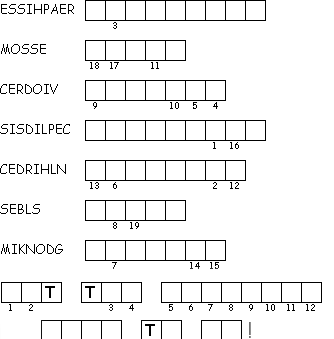

This week's lessons: Job 1:1, 2:1-10 and Psalm 26 or Genesis 2:18-24 and Psalm 8 Hebrews 1:1-4, 2:5-12 Mark 10:2-16
Elementary School Pew-work
Unscramble the bolded words:
ntaaS _________ answered, "There's no naip_________ like your own. People will do anything to stay ealvi_________. Try striking Job's own body with pain, and he will curse you to your face." "All right!" the LRDO _________ replied. "Make Job suffer as much as you want, but just don't lilk _________ him." Satan left and caused painful sores to break out all over Job's body--from head to toe.
Then Job sat on the sa-hhpea_________ to show his sorrow. And while he was scraping his sores with a broken piece of tpeotyr_________, his fiew _________asked, "Why do you still trust dGo_________? Why don't you curse him and die?"
Job replied, "Don't talk like a fool! If we accept sssgnblei_________ from God, we must accept bruolte _________as well." In all that happened, bJo_________ never once said anything against God.
|
Created by Puzzlemaker at DiscoverySchool.com |
 Unscramble each of the clue words. |
Across 2. A good and patient man 5. who gathered around God? 6. What Job suffered from Down 1. what we must also accept from God 3. What we accept from God 4. Who caused trouble for Job? |
Next Week: Job 23:1-9, 16-17 and Psalm 22:1-15 or Amos 5:6-7, 10-15 and Psalm 90:12-17 Hebrews 4:12-16 Mark 10:17-31